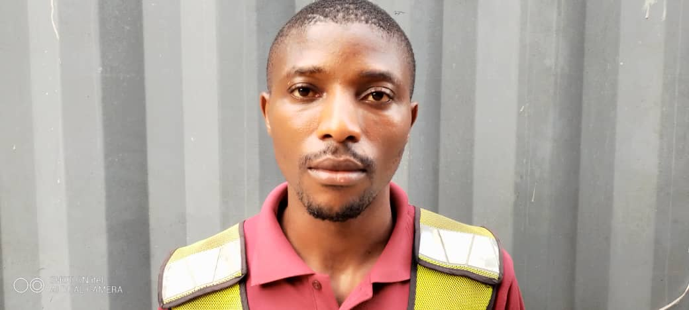

Home
Rafting Website
Rafting Site Plan
Linkedin
Facebook
Oluwayemi Oni| WDD 130

Hello! My name is Oluwayemi Oni and I'm from Nigeria. I enjoying learning new skills
Aba Nigeria Temple
Edmonton Alberta Temple
Durban South Africa Temple